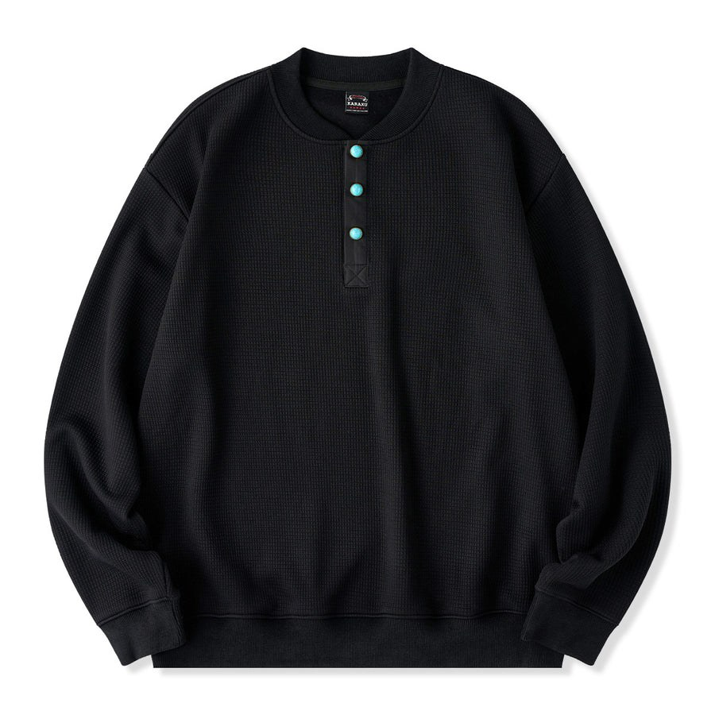

綠松石色鈕扣 鬆餅格亨利領大學T
預購日本海外連線
東京原宿選物店 KARAKU。全黑大學T配上一排綠松石色調鈕扣，簡單卻有記憶點；鬆餅格布料柔軟透氣、羅紋袖口下擺，寬鬆微彈，S～2XL。搭牛仔褲休閒、配西裝褲也很有質感。
- 材質
- 聚酯纖維 95%＋彈性纖維（氨綸）5%
- 布料
- 訂製鬆餅格紋
- 鈕扣
- 綠松石色調鈕扣（非天然石）
- 版型
- 寬鬆
- 厚度
- 標準（比襯衫厚、比大學T薄）
- 彈性
- 微彈
- 內裡
- 無
- 保養
- 可水洗，建議翻面裝洗衣袋、陰乾
- 顏色
- 黑
SIZE 尺寸表（cm）
| 尺寸 | 衣長 | 肩寬 | 胸圍 | 袖長 | 袖口 |
|---|---|---|---|---|---|
| S | 65 | 51.5 | 120 | 59 | 10 |
| M | 67 | 53 | 124 | 60 | 10.5 |
| L | 69 | 54.5 | 128 | 61 | 11 |
| XL | 71 | 56 | 132 | 62 | 11.5 |
| 2XL | 73 | 57.5 | 136 | 63 | 12 |
平放測量，誤差約 1～3 cm。2XL 日本 12 月上旬補貨。
日本代購商品，價格依匯率與運費報價，請私訊 Threads @richang_select 詢問。